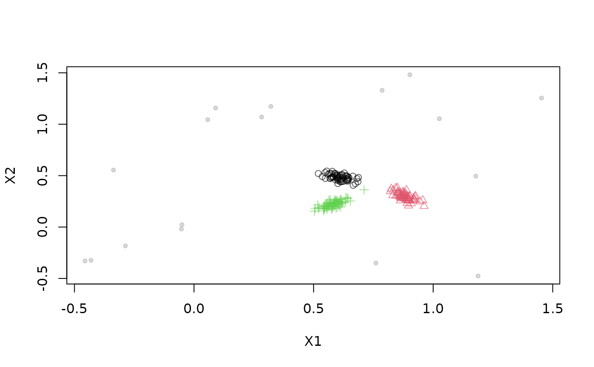

This generator mixes multiple streams given specified probabilities. The streams have to contain the same number of dimensions.
Arguments
- ...
DSD objects.
- prob
a numeric vector with the probability for each stream that the next point will be drawn from that stream.
See also
Other DSD:
DSD(),
DSD_BarsAndGaussians(),
DSD_Benchmark(),
DSD_Cubes(),
DSD_Gaussians(),
DSD_MG(),
DSD_Memory(),
DSD_NULL(),
DSD_ReadDB(),
DSD_ReadStream(),
DSD_Target(),
DSD_UniformNoise(),
DSD_mlbenchData(),
DSD_mlbenchGenerator(),
DSF(),
animate_data(),
close_stream(),
get_points(),
plot.DSD(),
reset_stream()
Examples
# create data stream with three clusters in 2D
stream1 <- DSD_Gaussians(d = 2, k = 3)
stream2 <- DSD_UniformNoise(d = 2, range = rbind(c(-.5, 1.5), c(-.5, 1.5)))
combinedStream <- DSD_Mixture(stream1, stream2, prob = c(.9, .1))
combinedStream
#> Stream Mixture (d = 2)
#> + Gaussian Mixture (d = 2, k = 3)
#> + Uniform Noise (d = 2)
#> Class: DSD_Mixture, DSD_R, DSD
get_points(combinedStream, n = 20)
#> X1 X2 .class .stream
#> 1 0.86843259 0.331758173 2 1
#> 2 0.52844181 0.200108555 3 1
#> 3 0.61134550 0.480263491 1 1
#> 4 0.55694062 0.225185860 3 1
#> 5 0.86070285 0.302935457 2 1
#> 6 0.64302540 0.464270200 1 1
#> 7 -0.04140717 -0.008971439 NA 2
#> 8 0.89332398 0.238651591 2 1
#> 9 0.84250069 -0.191815476 NA 2
#> 10 0.64434041 0.432067246 1 1
#> 11 0.88072955 0.281491522 2 1
#> 12 0.59804592 0.516742779 1 1
#> 13 0.60960344 0.509806865 1 1
#> 14 0.89438741 0.325618947 2 1
#> 15 0.60023851 0.227878879 3 1
#> 16 0.82009664 0.368891259 2 1
#> 17 0.57290441 0.263961074 3 1
#> 18 0.93330149 0.233366927 2 1
#> 19 0.59872318 0.446890121 1 1
#> 20 0.90181017 0.308962054 2 1
plot(combinedStream, n = 200)
